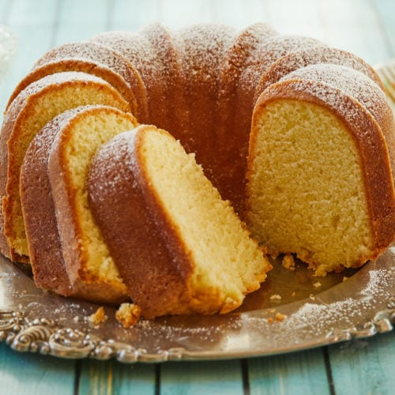

My last Wednesday was pretty typical for a weekday on winter break. Both of my parents were at work, my brothers had already left to go back to college so I was left at home to my own devices. To put it plainly I was bored. I slept in late as college students do, eventually made breakfast, but then I was at a loss for how I should spend my time.
The recipe that I follow is included in this link!I decided to bake a pound cake. My relationship with baking is love/hate. I’m not a fan of the baking process, but I’ll go through it to get to the end result, which I love!
